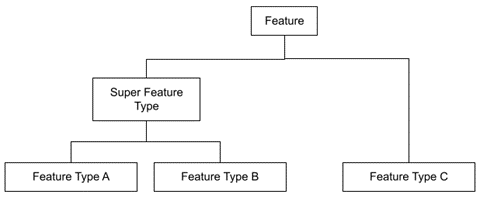
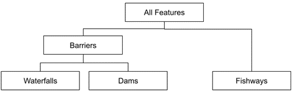

CABD Features and Database Models¶
CABD Feature Model¶
Generic Feature Model¶
Features in CABD have an optional hierarchical structure. Feature types can be combined to form “super feature types”.
There are no structures in the software/database that enforce this model. The database views (see section below) are used to define the various feature types and super types. It would be possible for a feature type to be associated with multiple super types, if desired.
Implemented Feature Model¶
There are currently three feature types and one super type implemented in CABD. Adding additional feature types is expected and the instructions for this are outlined below (How to add new Feature Type).
Feature types:
barriersdamswaterfallsfishwaysmediumbig
CABD Database Model¶
The database is structured into multiple schemas. Each feature type has its own schema, with a common cabd schema for shared data and feature metadata.
Views¶
Each feature type and super feature type has an associated view which supports the api. This view should include all fields required for output (either for display on the UI or to support the future editing api). The view cabd.all_features_view supports all features api endpoint.
The views are used to support the CABD APIs that list features. Each feature type is linked to a database view. When requesting features of a specific type the view associated with this type is queried. The fields returned by this view populate the attributes of the feature returned by the API. Feature type views will generally query a single data table (for example, the dams view queries the dams data table). Super feature types will generally query multiple data tables (for example, the barriers view queries both the dams data table and the waterfalls data table).
Core Tables¶
These tables are the core tables for the system and required regardless of the feature types loaded. They support the definition of feature types.
cabd.feature_types
Lists all the feature types supported by the system.
Column |
Description |
|---|---|
type |
Unique identifier for feature type. Required. |
data_view |
The data view supporting the feature type. Required. |
name |
The human readable name for the feature type. Required. |
attribute_source_table |
The data table containing the attribute data source information for the feature type. This is optional and can be null. |
default_featurename_field |
The field in the data_view that represents the main feature name. |
feature_source_table |
The data table containing a link between the features and the data source information. This is optional and can be null. |
cabd.feature_type_metadata
Lists all the attributes for a given feature view and the metadata details about the attribute.
Column |
Description |
|---|---|
view_name |
The data view name. |
field_name |
The field name in the data view that represents this attribute. |
name |
The name of the attribute. |
description |
A description of the attribute. |
is_link |
Boolean. If true this attribute will be treated as a URL in the API. The value will be returned in URL format (For example: link to another feature). |
data_type |
The data type for the attribute. Valid values: varchar(xxx), text, boolean, array(type), integer, double, uuid, date, geometry. |
vw_simple_order |
Metadata for the UI. The UI supports a simple and all attribute view. This field represents the order the attribute should appear in the simple ui view. The value should be null for attributes that should not appear in the simple view. |
vw_all_order |
Metadata for the UI. The UI supports a simple and all attribute view. This field represents the order the attribute should appear in the all attribute view. Should be null for attributes that should not appear in the view. |
include_vector_tile |
Boolean. If true this attribute will be included in the vector tile service. |
value_options_reference |
For columns that have a defined list of valid values in another database table (for example: The string should be of the form For example: |
cabd.data_source
Lists data sources. Supports data source tracking for feature type attributes.
Column |
Description |
|---|---|
id |
A unique identifier for the data source. |
name |
Name of the data source. |
version_date |
Data source version date. |
version_number |
Data source version number (optional). |
source |
A link to the source data or description of where the source data came from. |
comments |
Any additional comments. |
Feature Tables¶
The feature type data tables are found in their corresponding schema. Generally, there will be one feature data table and a number of reference tables that represent attribute values. Details for current feature types can be found in the Data Dictionary document.
Feature Type Attribute Data Sources¶
The CABD database has the option of storing the data source for each attribute associated with the feature type. This has been implemented by having <featuretype>.<featuretype>_feature_source and <featuretype>.<featuretype>_attribute_source tables for the feature type.
The <featuretype>_feature_source table contains for each cabd feature a link to the data source and associated data source feature id.
Column |
Description |
|---|---|
cabd_id |
The unique cabd feature identifier. This id must exist in the corresponding data table for the feature type. |
datasource_id |
A link to the data source id in the cabd.data_source table |
datasource_feature_id |
The identifier of the feature in the data source. |
The <featuretype>_attribute_source table contains the cabd_id and one column for each attribute that requires data source tracking. The column, <attribute>_ds, links to the cabd.data_source table to identify the data source for the attribute value.
How Add a New Feature Type¶
New feature types can be added to the system by adding the data to the database and updating the database metadata tables.
Create a new schema for your feature type.
Create the required data tables and reference tables to store the feature data and populate these tables. These should exist in their own
<featuretype>schema.Create a view that joins the data table with the reference tables to include all the data you want visible to the ui. Use one of the existing feature types views as an example (ex.
cabd.dams_view).
Warning
When creating and/or updating existing view the role cabd must have permission to use the view (otherise the application won’t start up).
GRANT ALL PRIVILEGES ON cabd.dams_view to cabd;
Update the
cabd.all_features_viewto include the data from this new feature type. Use the existing view as an example, appending the new feature type data.If the new feature type is considered a barrier you also need to update the
cabd.barriers_view. Use the existing view as an example.Add a row to the
cabd.feature_typestable to represent the new feature type.- Add rows to the
cabd.feature_type_metadata table. One row needs to be added for each column returned by the feature type view created in step 3. view_name– the name of the view created in step3field_name– the name of the field in the viewname– the human friendly name for the columndescription– (optional) a description for the columnis_link– true if the column represents a link to another api end point in the applicationdata_type– data type of the columnvw_simple_order– the order the column should appear in the simple view of the feature (or null if it shouldn’t appear at all in the simple view)vw_all_order– the order the column should appear in the all info view of the feature (or null if it shouldn’t appear at all)include_vector_tile– true or false if the attribute should be included in the vector tile of this feature typevalue_options_reference– for columns that have a defined list of valid values in another database table (for example:province_territory_code), this field identifies what table the values can be loaded from and what fields in the table that provide the value, name, and description. This column should be null for fields that don’t reference tables; otherwise it should contain a string of the form“<tablename>;<valuefield>;<namefield>;<descriptionfield>”. All are required exceptdescriptionfieldwhich can be blank. Thetablenamereferences the code table, thevaluefieldthe value field in the code table, thenamefieldthe human friendly name field in the table, anddescriptionfieldthe description field in the table.
- Add rows to the
[OPTIONAL] Create the
<featuretype>.<featuretype>_feature_sourceand<featuretype>.<featuretype>_attribute_source tablesand populate with appropriate data.Restart the web server. A restart is required to reload the cached metadata.
At this point the features should be available in the API.
The new feature type should show up in the types API: https://server.ca/cabd-api/features/types/.
The new features can be accessed from here: https://server.ca/cabd-api/features/<newfeaturetype>.